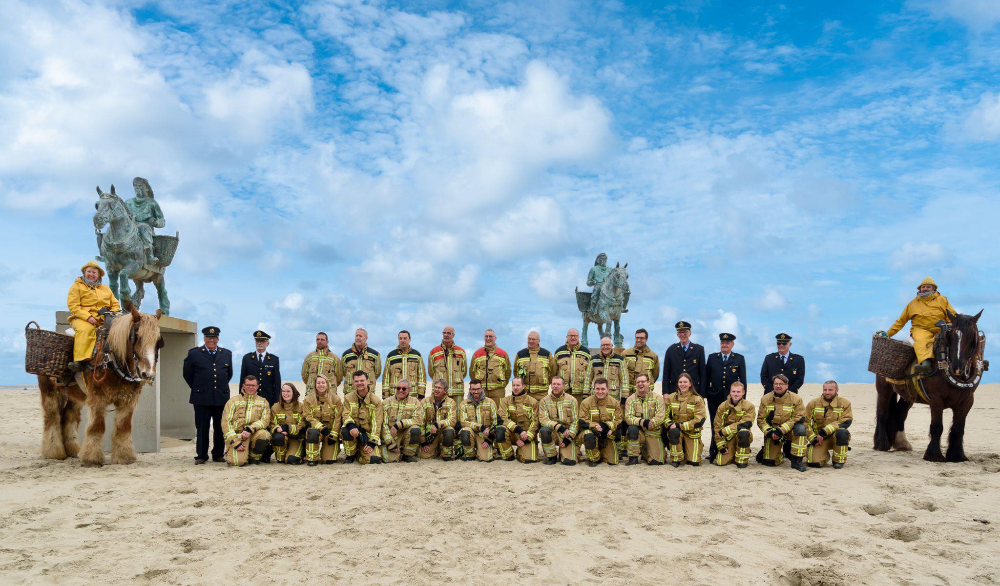
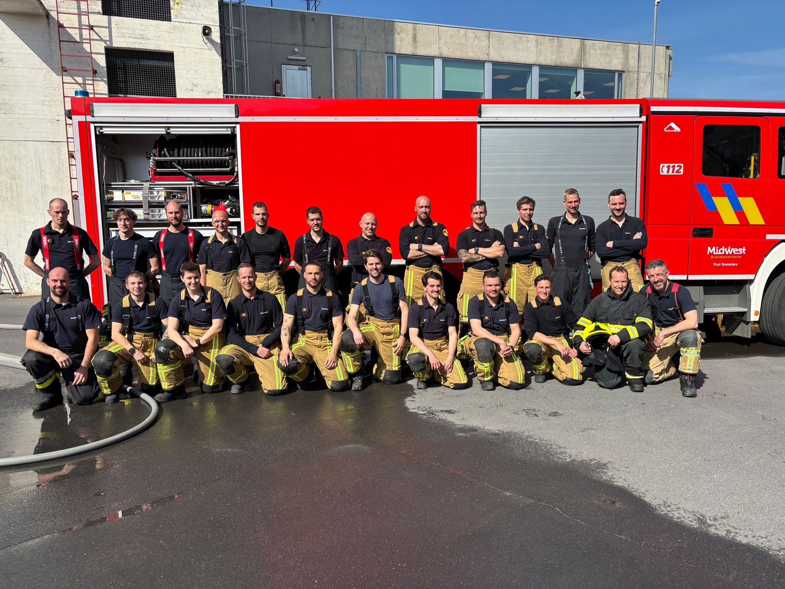
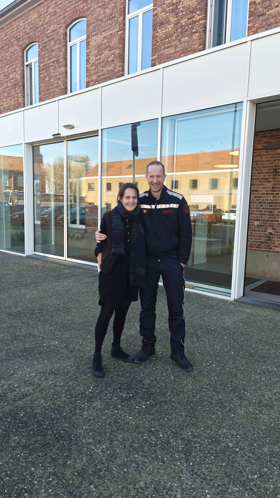

Er brand een vuur diep in mij ... 🧑🚒
Twee jaar geleden besliste ik om de opleiding tot brandweerman te volgen. Een zaadje dat ooit geplant werd, en begon te groeien dankzij lokaal bestuur De Panne dat me de kans gaf om de opleiding te volgen (thanks for that!). Maar niet zonder Elise, die me het nodige duwtje gaf en - zoals vaak - soms beter weet dan ikzelf wat ik nodig heb.
Het avontuur startte met een eerste kennismaking met de wereld van de brandweer infoavond, oefenproeven… toch eens proberen wat dat geeft, zo’n 30 meter omhoog op de ladder. Daarna een kennistest, technische en fysieke proeven. Het ritme van examens kon beginnen. Wat dat studeren betreft: dat was toch alweer even geleden.
Acht modules later - van brandbestrijding over gevaarlijke stoffen tot technische hulpverlening & levensreddend handelen, en alles daartussenin - ligt er plots een diploma klaar. Het fijne aan de opleiding is dat je na bijna elke module al inzetbaar bent binnen je post. Je kan al snel mee op interventie dus.
3 foto's die (iets meer dan) een jaar opleiding samenvatten.
Daar had ik het nog niet over gehad: mijn initiële insteek was om brandweerman te worden in De Panne, tijdens de werkuren (ik volg tenslotte de opleiding dankzij m'n werkgever). Maar starten doe je altijd in je hoofdpost, waar je woont. En ik kon het niet beter treffen: een plezante brandweerfamilie bij post Oostduinkerke. Figuurlijk, maar ook letterlijk: mijn beide grootvaders hangen er aan de 'wall of fame', en ik zit in de sectie samen met mijn neef. Als dat maar goed komt. 😉

Maar dat is niet de enige familie. Er is ook nog die tweede brandweerfamilie: de medestudenten van NB01. Naar ’t schijnt is de lichting van '25-'26 nu al de beste van de afgelopen decennia — al zeggen we dat vooral zelf. 😅
Elke donderdag samen nieuwe dingen leren, ervaring opdoen, plezier maken. Elke module leer je elkaar wat beter kennen. Samen blokken voor examens en praktijkproeven, inclusief een bloedserieuze WhatsApp-groep (not).

Maar als we het over familie hebben, is er één iemand zonder wie dit nooit gelukt was: dank je wel, Elise. Mijn lief. Voor de steun door dik en dun. Terwijl jij zelf volop in de studies zat én aan een nieuwe job begon. Mijn laatste lesdag mochten we zowaar samen doorbrengen op de POV (brandweer- en politieschool ). De cirkel was rond.

Goed. Diploma op zak dus. Maar veel meer dan een eindpunt voelt het als een begin.
What's next? Nog eerst die stage afronden, daarna beslist het zonecollege over m'n aanstelling. En met wat geluk mag ik dan naast als gastpost aan de slag in De Panne.
Op naar vele en veilige interventies. Want dat leer je als eerste bij de brandweer: veiligheid voorop, voor jezelf, je collega's, de omgeving en eventuele slachtoffers.
Trouwens, heb je ook zin gekregen? Weet dat we nog best wat brandweervrijwilligers zoeken! Ik kan het je alleen maar aanraden! Kom eens langs op een infosessie.